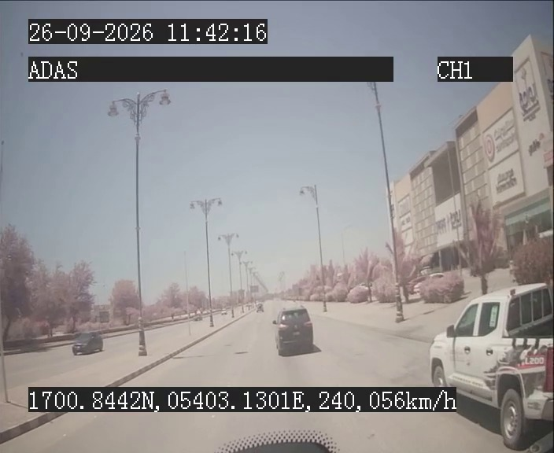

🚗 Fleet Video Analysis Portal
ADAS/DMS Risk Assessment — Vehicle ID > 7 digits
Scope: ADAS/DMS — Vehicle ID > 7 digits | Possibility = actual detected risk, not bad-camera rate
⚠️ Data Limitation: FCW/fatigue analysis requires OpenCV/YOLO/MediaPipe which are not available in this environment.
The results below are based on the available analysis output (September 2026 data). For October 2024 clips, no ML-based risk scoring was performed.
Methodology: Possibility = actual detected risk percentage from audited pipeline output. Camera Blocked / File Corrupt / Black Screen clips = 0% (no usable footage = no risk assessable).
Methodology: Possibility = actual detected risk percentage from audited pipeline output. Camera Blocked / File Corrupt / Black Screen clips = 0% (no usable footage = no risk assessable).
📊 Highest-Risk Clips (Vehicle ID > 7 digits)
| # | Vehicle ID | Vehicle Plate | Company | Warning Type | Possibility | Frame |
|---|---|---|---|---|---|---|
| 1 | 096892328474 | 5752HM | SHANFARI SALALAH | FCW | 12% |  |
| 2 | 096895479219 | TS93-3722MS | AWT - TRANSPORT | FCW | 0% |  |
| 3 | 096871959302 | — | DVR - TEST | Fatigue (DMS) | 0% |  |
Only 3 clips exist for vehicles with ID > 7 digits in the available analysis data. Only 1 clip (rank 1) has actual detected risk (FCW 12%). Blocked/corrupt clips are correctly shown as 0% — not ranked as risk.
📈 Risk Methodology Reference
| Clip Condition | Possibility | Reason |
|---|---|---|
| Forward-collision risk detected (FCW) | Actual % (e.g., 12%, 30%, 55%) | Genuine collision risk from audited pipeline |
| Camera Blocked / Black screen | 0% | No usable footage — nothing can be detected |
| File Corrupt | 0% | File cannot be decoded — no risk assessable |
| NO same-lane FCW (audited) | 0% | No collision risk found after audit |
| False positive withdrawn | 0% | Automatic score was wrong, corrected by audit |
| Driver-facing / DMS blocked | 0% | No face visible — fatigue not assessable |
🔗 Deployment
Live on GitHub Pages: https://jonwusg.github.io/fleet-analysis-site/
Update by committing changes to the main branch — GitHub Pages auto-redeploys.